How to Reduce Material Waste in Steel Fabrication
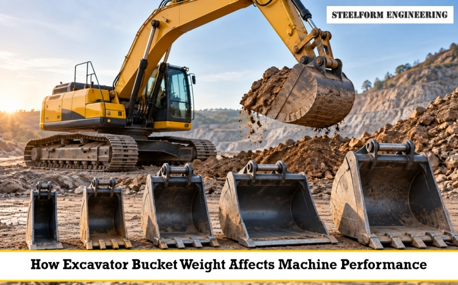
The excavator bucket may appear to be a simple attachment, but the weight of the bucket can seriously affect the effectiveness of the machine
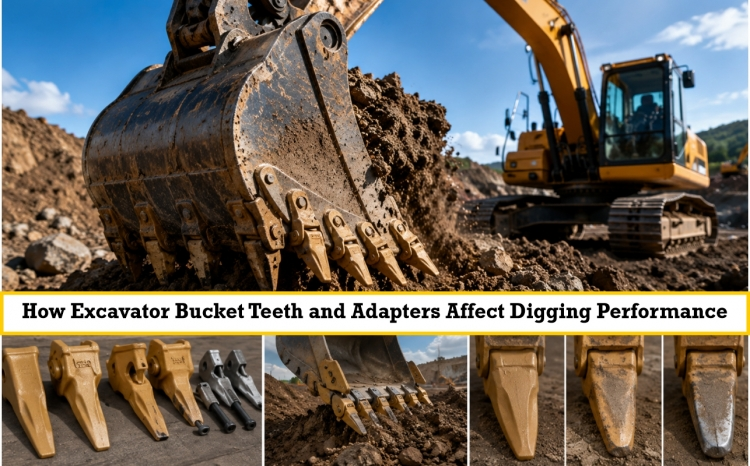
When an excavator is working through tough ground, the bucket teeth are the first point of contact with the material
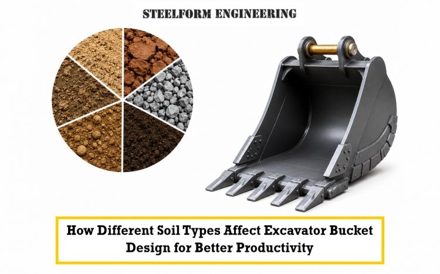
Excavators can carry out various tasks, but no single bucket can give the same level of performance
In excavating and civil construction industries, the performance of an excavating attachment needs to be matched to
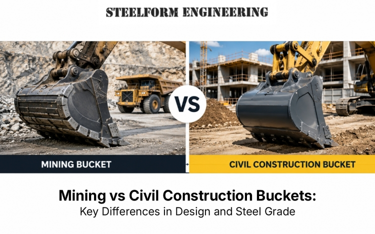
The bucket of an excavator is an important part of the machine’s productivity, longevity and efficiency when digging and moving material
Deciding what attachment you want for your heavy equipment is one of the most important choices you will make, as it will directly impact the way you will
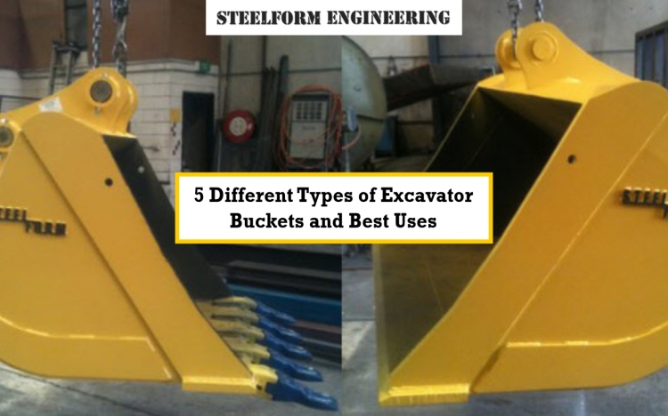
Choosing the right bucket for your excavator is the best way to get more work done on the job site and use less fuel.
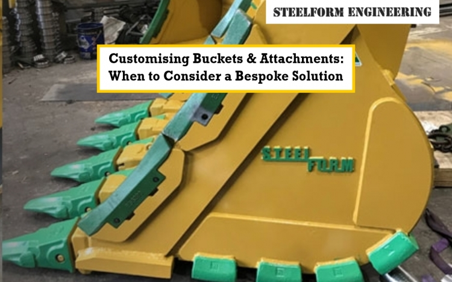
Excavators and other earthmoving machines have standard buckets or other equipment that
If you are using heavy machinery, then the excavator bucket is certainly your main equipment.
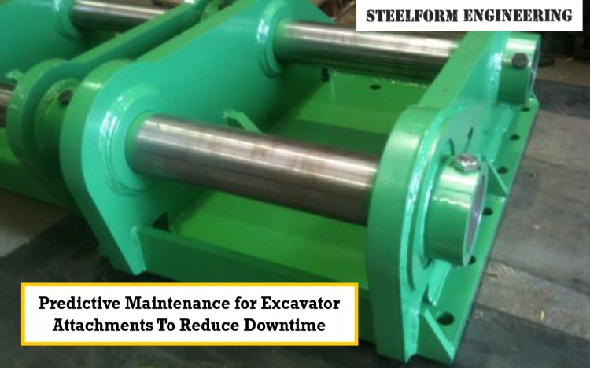
Unexpected equipment breakdowns can be a significant disruption on any job site, causing expensive..
Heavy equipment operators encounter different obstacles when it comes to working during extreme weather conditions, including blistering heat,
In the tough and unique world of construction and excavation, your machine\'s performance is only as good as the tools on it.
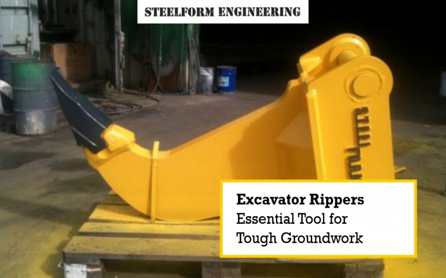
For contractors and heavy equipment operators, tackling challenging ground conditions is a common hurdle.
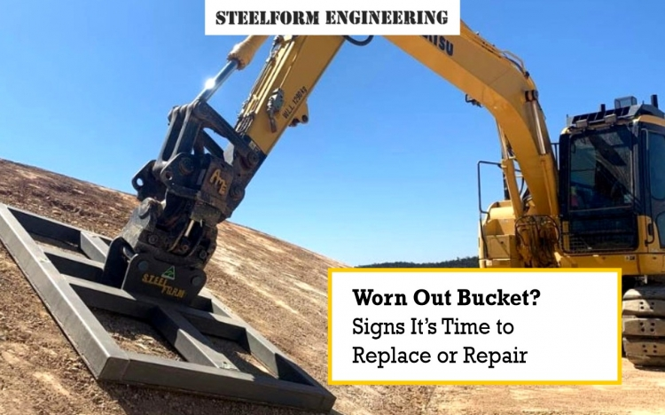
For any operator, an excavator bucket is more than just an attachment; it's the primary tool that gets the job done.
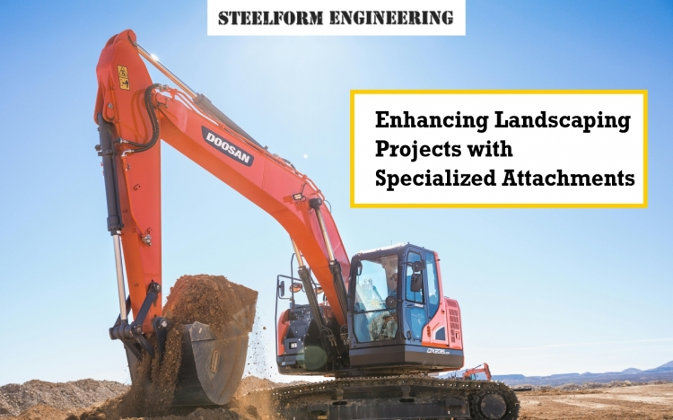
The right tools can transform a backbreaking chore into a seamless, efficient project for both landscaping professionals and enthusiasts.
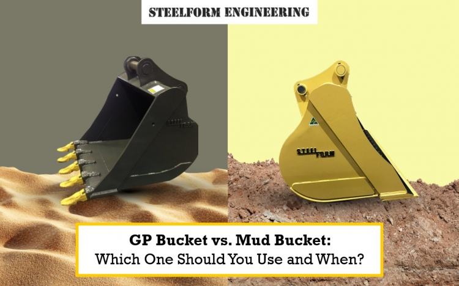
Compare GP and mud buckets for excavators. Learn their uses, key differences, and how Steelform Engineering delivers top-quality
Read how wash grinding enhances steel fabrication by improving surface finish, structural integrity, and coating adhesion for durable, high-quality products.
Boost efficiency and versatility with the top 10 heavy equipment attachments & discover expert tips to optimise your construction projects.
Excavator attachments are indispensable tools in the construction and earthmoving industry, significantly enhancing efficiency and productivity.
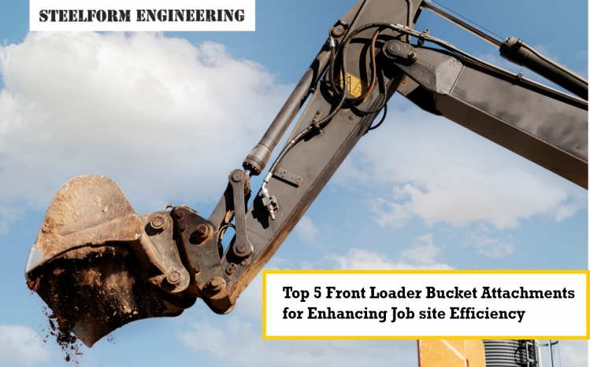
In the construction and excavation industries, using the right front loader bucket attachments
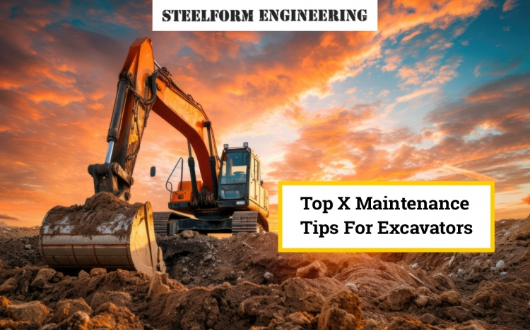
Excavators are essential pieces of equipment in the construction and mining industries, serving a wide range of functions.
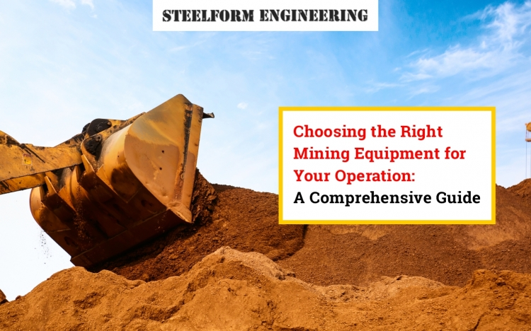
Any mining operation would not be the same without its equipment, which is crucial to
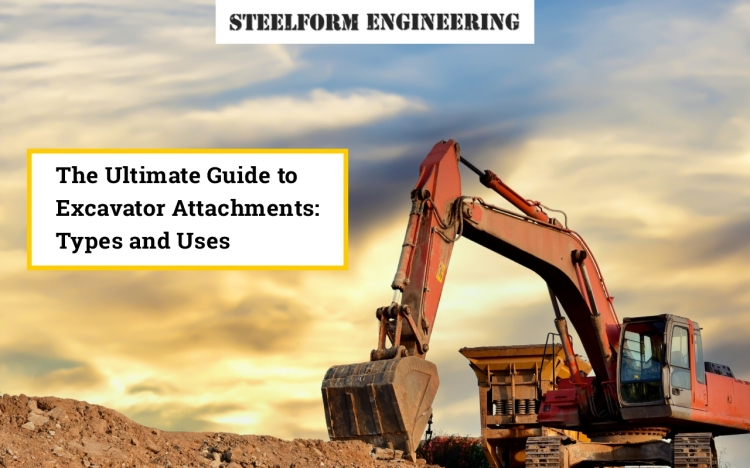
Do you have any experience with excavators? If you notice a machine that works on tracks
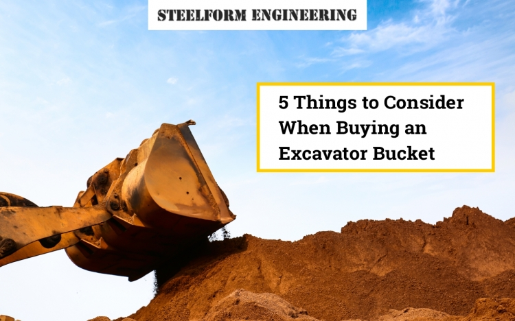
Are you in the market for an excavator bucket? Whether you're a seasoned contractor or new to the construction game, choosing the right
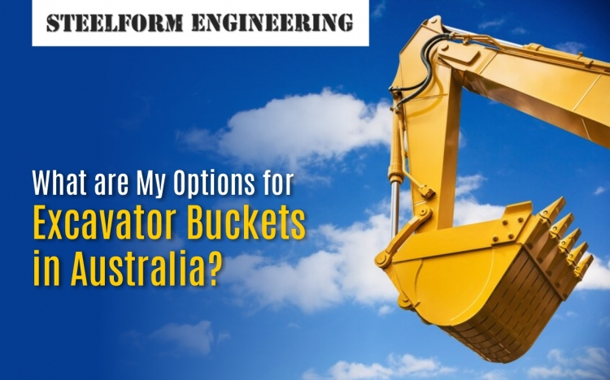
Excavator buckets play a crucial role in various construction and excavation projects. Whether you are looking to buy excavator buckets or explore
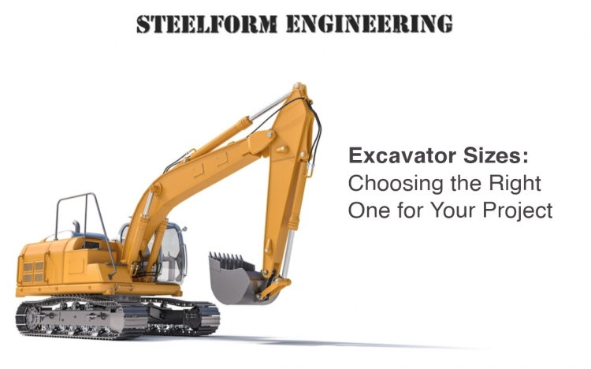
Excavators are versatile and powerful machines that play a crucial role in construction, landscaping, and various other industries. From digging trenches to moving heavy materials, these machines are designed
Excavator buckets are essential to any construction project involving digging, trenching, and material handling. A bucket is one essential attached
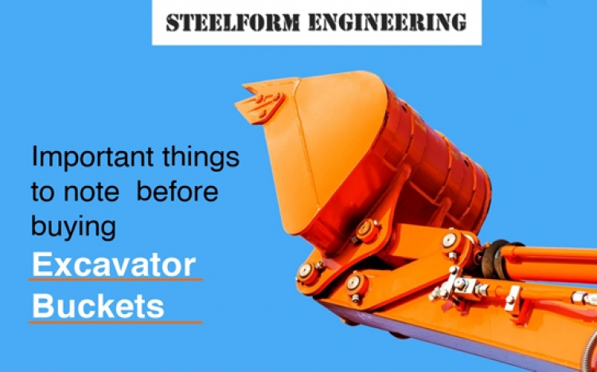
Excavator buckets are an essential attachment for any construction or excavation project. These buckets come in various sizes and shapes to suit different requirements, and choosing the right one can significantly
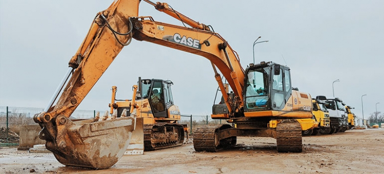
This article will give tips on how to select hard-wearing excavator attachments so you can be efficient in your excavating job. Are you looking for the best way to finish that digging work that needs to be done right away? First, you have to know how excavator
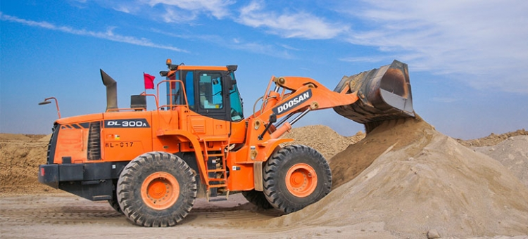
Are you familiar with excavation machines? If you see a machine that digs earth in a certain location and runs on tracks, that one is an excavator using excavator attachments particular to make digging the ground efficient. Any excavation project would necessitate the
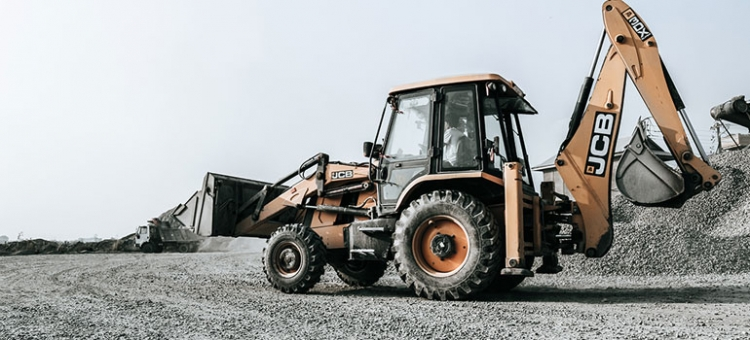
In the construction industry, a lot of things have to be done before a project is considered completed. There is digging and excavation, which is basic in many construction and infrastructure development projects. Without a machine that makes use of excavator buckets
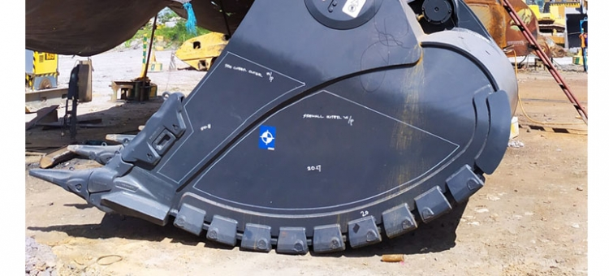
Do you know how to check if excavator buckets for sale in Melbourne are the ones that would serve for you for several years? There are some qualities you can test out to make sure that you are buying the best units for earth digging functions. Knowing the different